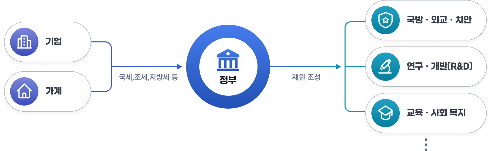

재정개요
1. 재정의 의미
재정활동은 정부가 수행하는 경제활동이며, 화폐단위로 표시되는 정부의 수입과 지출을 의미합니다.
국민경제를 구성하는 주체는 일반적으로 가계, 기업, 그리고 정부로 구분할 수 있습니다.
정부는 가계와 기업으로부터 조세 등을 거두어들이고, 이를 바탕으로 공공재와 공공서비스를 제공하기 위해 지출합니다. 이러한 정부부문의 경제활동을 통칭하여 ‘재정’이라고 합니다.
구체적으로 정부는 국세와 지방세를 포함한 조세, 부담금·기여금의 징수, 보유자산(주식·부동산 등)의 매각, 국공채 발행 등을 통해 재원을 조성합니다. 마련된 재원은 국방·외교·치안, 국가 유지, 연구·개발(R&D) 등 경제성장을 위한 기반 조성, 교육·사회복지 수요 충족 등 공공부문의 기능을 수행하는 데 지출됩니다.
재정활동

2. 재정의 기능
재정의 기능은 크게 세 가지로 나누어 볼 수 있습니다.
- 자원배분 기능은 정부가 시장에서 충분히 공급되지 않는 공공재, 외부효과가 큰 투자, 사회간접자본 등에 재정을 투입함으로써 자원이 효율적으로 배분되도록 하는 것을 의미합니다.
- 소득재분배 기능은 조세 체계에서 누진세율을 적용하고, 세출 측면에서는 사회보장제도·복지지출·주거지원 등을 통해 소득격차를 완화하고 사회적 형평성을 제고하는 것을 뜻합니다.
- 경제안정 및 성장 기능은 정부가 경제정책 수단을 활용하여 물가를 안정시키고, 고용을 확대하며, 성장동력을 확충하는 역할을 말합니다. 이러한 재정의 기능은 국민경제에서 재정의 역할을 보여줄 뿐만 아니라, 재정활동의 총체적 성과를 평가하는 기준이 되며, 개별적인 조세정책과 재정지출의 타당성을 판단하는 준거가 되기도 합니다.
3. 재정의 분류
재정은 다양하게 분류할 수 있으며 다음의 세 가지 기준에 따라 주로 구분합니다.
- 재정운용 주체에 따라 중앙정부 재정과 지방정부 재정으로 나뉩니다. 중앙정부 재정은 중앙정부를 단위로 이루어지는 재정활동을 의미하고, 지방정부 재정은 지방자치에 기반한 자치단체의 재정활동과 교육자치에 기반한 지방교육재정을 포함합니다.
- 재정은 운용수단에 따라 예산(일반회계 및 특별회계)과 기금으로 구분됩니다. 양자는 국회의 심의·의결을 거친다는 점에서는 같지만, 기금은 계획의 변경이나 집행절차 등에 있어 예산보다 넓은 재량권이 인정됩니다.
- 재정활동은 본질적으로 정부의 수입·지출활동으로, 예산은 ‘세입’과 ‘세출’로, 기금은 ‘수입’과 ‘지출’로 구성됩니다.